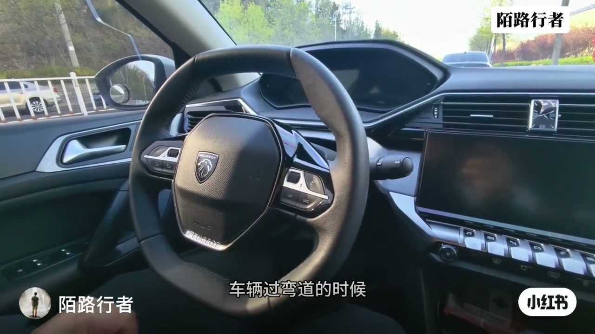
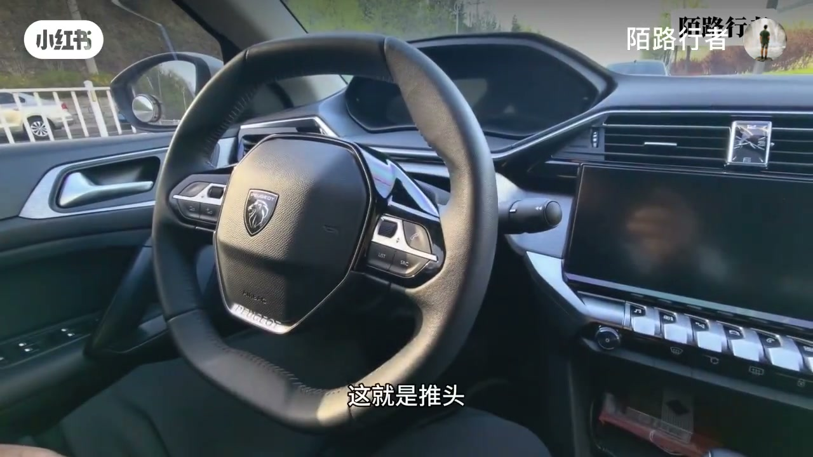
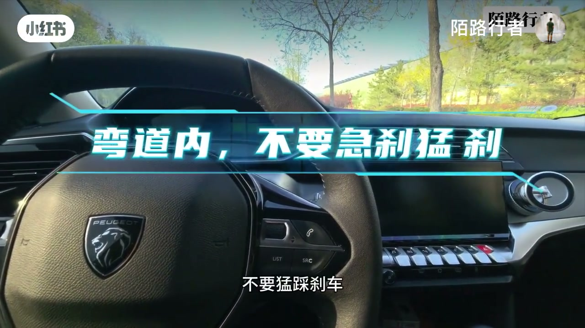
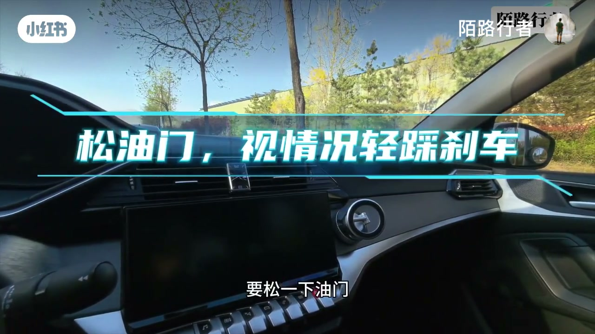
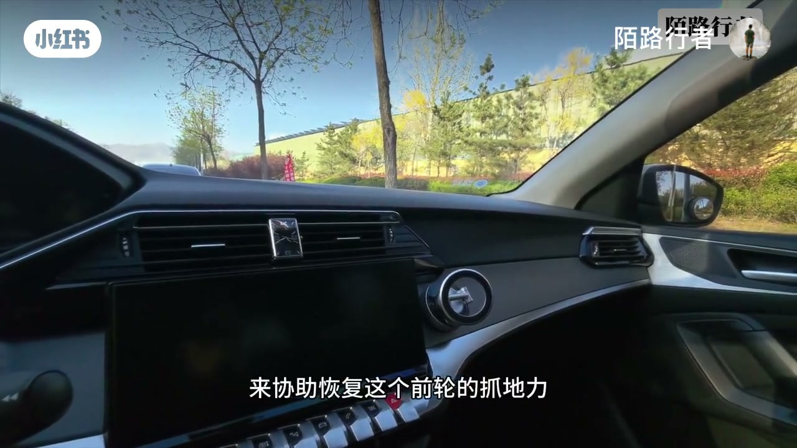

内容要点
「陌路行者」在标致车内视角讲解推头（转向不足）：车头不按预期转弯、往弯道外侧跑。中段 ASR 大量缺失，成因与处置步骤依据画面字幕重建：松油门、视情况轻刹、微微回方向，切忌猛刹。
知识结构
推头=转向不足；对应另一端是转向过度。
前驱车头重，前轮更容易先到抓地极限；多数车都有。
弯内不急刹；松油门、视情况轻刹；反方向轻回一点。
推头减轻后再柔和纠正回目标转弯角。
推头时先减负荷恢复前轮抓地：松油门、轻点刹、微微回方向——猛打方向或猛刹只会把前轮推得更滑。
00:00-01:30推头是什么、为何前驱更常见
开场定义：过弯道的推头现象，标准说法是转向不足——车头没有顺着我们认为的角度转弯，要往弯道外侧跑。与之对应的是转向过度。
作者指出这很常见。前驱车发动机在前，前轮更容易先达到抓地极限；这个档次的车基本都有相关电子辅助，但个体表现可能有差异。遇到推头要想办法减少它，而不是继续加方向硬掰。


01:30-02:48松油轻刹微回方向
处置口诀（字幕）：弯道内不要急刹猛刹——千万不要猛踩刹车。先松油门，视情况轻踩刹车；再往反方向轻回一点点方向盘，不要回得太猛、不要大幅度回方向，为的是顺着车身姿态、协助恢复前轮抓地力。
当推头感减轻后，再把方向轻柔纠正回想要的转弯角度。总结：遇到推头就松油门、轻踩刹车、微微回一下方向，抓地力变好了再调回正常转弯角。



完整转录（12段）
以下文本由 Whisper medium 模型自动转录，可能存在少量识别误差，已尽可能修正。
今天我们聊一聊车辆过弯道的时候的一种推头现象
推头标准说法是转向不足
下下吧
第一是轻柔的回一点,不要回的太猛,不要大幅度的回方向盘
为的是顺著车身的姿态,打著一点点方向
来协助恢复前轮的抓地力
第四,当你觉得推头感有减轻的时候
你再把方向轻柔的纠正回你想要的正确的转弯角度
总之,遇到推头了,就松油门,轻踩煞车
然后微微的回一下方向
抓地力控制力,感觉变好了,再调回正常的转弯角度
今天我们就分享这些吧,谢谢